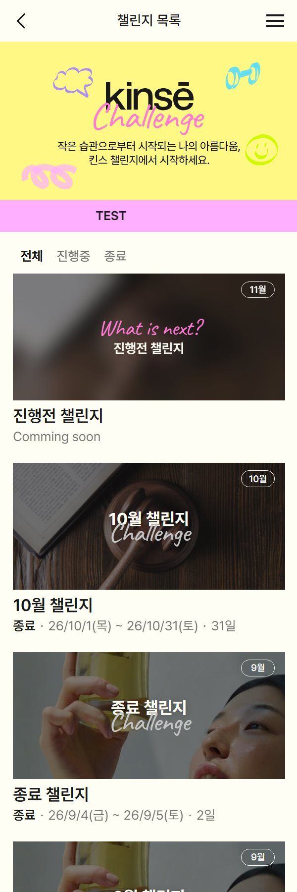

챌린지 페이지 목록
사용자 화면의 챌린지 관련 페이지 전체 · 2026-10-19 저녁 기준 (검수 결과 일괄 공개 · 당일 사진 변경 반영) · 목차
한눈에 보기
목록→상세→신청→신청 완료→사진 인증→인증 완료⋯ 검수기간 끝 →결과 (성공 / 실패)→내 기록
마이페이지 '나의 챌린지'에서는 상태에 따라 사진 인증 · 결과 화면으로 바로 들어가요.
페이지별 정리
| # | 주소 · 이름 | 언제 · 누가 볼 수 있나 | 화면 내용 | 들어오는 길 / 다음 화면 |
|---|---|---|---|---|
| 1 | 챌린지 목록/dh/challenge_list |
누구나 · 탭 전체 / 진행중 / 종료 | 공지 롤링(비로그인만) · 신청중 카드 · 진행 예정 카드(진행 예정 챌린지, 클릭 안 됨) · 종료 카드, 카드 월은 진행 시작일의 달 |
헤더 메뉴 · 홈 → 카드 누르면 상세 |
| 2 | 챌린지 상세/dh/challenge_view?idx= |
누구나 · 상태 카드와 하단 버튼이 기간 · 신청 여부에 따라 바뀜 | 상단 카드(신청 진행중 / 신청 완료 D-n / 참여중 n/총 / 참여 완료 · 인증 확인중 / 종료) · 상세 이미지 · 햅삐들의 챌린지 인증최신 6장 버튼 : 로그인 후 신청하기· 챌린지 신청하기· 신청 완료· 사진 등록하고 인증하기· 인증 확인중이에요· 지금은 신청할 수 없어요· 다음에 다시 돌아올게요 :-) |
목록 · 홈 카드 → 신청 / 사진 인증 |
| 3 | 챌린지 신청/dh/challenge_apply?idx= |
로그인 회원 · 신청기간 · 아직 신청 안 한 챌린지 | 본인 인증(이름 · 전화번호, 회원 정보와 동일해요) · 제품 수령 주소 · 동의 3개 → 신청 완료하기 |
상세 챌린지 신청하기→ 신청 완료 |
| 4 | 신청 완료/dh/challenge_apply_done?idx= |
신청한 회원 | 챌린지 신청이 완료되었어요! / 작은 습관을 기르는 첫 시작!+ 챌린지 진행 기간 |
신청 저장 직후 → 나의 챌린지 · 홈 |
| 5 | 사진 인증/dh/challenge_verify?idx= |
신청한 회원 · 진행 시작부터 (시작 전 · 미신청은 상세로) 결과 공개 뒤(검수기간 끝 + 결과 있음)에는 결과 화면으로 이동 |
사진 칸 + 도장판(인증한 날 · 놓친 날 · 오늘, 도장 누르면 그날 사진 · 날짜) + 사진이 안 올라가요! 진행기간 하루 1장, 오늘 올렸으면 그 사진을 보여 주고 그날에만 다시 골라 변경 · 버튼 항상 인증하기 검수기간 사진 칸 지금은 인증할 수 없어요· 버튼 결과 대기중이에요 검수 끝 · 결과 없음 사진 칸 닫힘 · 버튼 없음 |
상세 사진 등록하고 인증하기· 나의 챌린지(진행중 · 결과대기중) → 올리면 인증 완료 |
| 6 | 인증 완료/dh/challenge_verify_done?idx= |
진행기간 · 오늘 사진을 올린 회원만 (아니면 사진 인증으로) | 사진 인증 완료했어요! / 이대로만 계속, 꾸준히 해봐요:-)+ 오늘 올린 사진 + 도장판(누를 수 없음) + 갤러리에 저장(이미지로 저장) 승인 · 반려 도장 표시 없음 (퍼블 · 피그마에도 없음) |
사진 인증에서 올린 직후 |
| 7 | 챌린지 결과 (성공)/dh/challenge_result?idx= |
신청한 회원 · 결과 공개 뒤 · 결과 성공 | 챌린지 성공했어요! / 이번 챌린지로 한 걸음 더 나아갔어요.+ 성공 혜택 알림톡 안내 · 내 기록 보기/ 챌린지 홈으로 가기 |
나의 챌린지 결과발표 · 사진 인증 주소 → 내 기록 |
| 8 | 챌린지 결과 (실패)/dh/challenge_result_fail?idx= |
신청한 회원 · 결과 공개 뒤 · 탈락(횟수 부족 · 반려) | 완주하지 못했어요 / 다음 챌린지 성공을 응원해요!+ 추천 루틴 1개 · 같은 버튼 2개 |
위와 같음 → 내 기록 |
| 9 | 내 기록 (챌린지 히스토리)/dh/challenge_record?idx= |
신청한 회원 · 결과 공개 뒤 (전에는 아직 결과가 발표되지 않았어요.) |
기록을 확인해보세요 / 도장을 눌러 나의 챌린지 기록을 돌아보세요.+ 사진(날짜) + 도장판 + 갤러리에 저장 사진 왼쪽 위 작은 도장 = 승인(웃는 얼굴) · 반려(우는 얼굴), 안 올린 날은 업로드하지 않았어요 |
결과 화면 내 기록 보기 |
| 10 | 나의 챌린지/dh/my_challenge |
로그인 회원 (마이페이지에는 1개) | 신청한 챌린지 카드 + 배지 하나 : 진행중진행예정결과대기중(검수기간)결과발표(검수 끝 + 결과 있음)종료(결과 없음) | 카드 → 진행예정 : 상세 / 결과 있음 : 결과 화면 / 그 외 : 사진 인증 |
챌린지 카드가 나오는 곳 (페이지는 아님)
- 홈(메인) — 신청한 챌린지 중 안 끝난 것 1개, 없으면
챌린지 참여하기
. 진행중 카드 문구 : 오늘 인증 전오늘의 챌린지 시작!
/ 후오늘의 루틴 완료 :-)
+ n/총 - 챌린지 상세 상단 — 홈과 같은 카드 (include/challenge_card.php)
- 마이페이지 — 나의 챌린지 카드 1개 (include/my_challenge_card.php)
기간별로 열리는 페이지
| 기간 | 신청한 회원 | 신청 안 한 회원 |
|---|---|---|
| 신청기간 | 상세(신청 완료 D-n) · 신청 완료 | 상세 → 신청 |
| 진행기간 | 사진 인증 · 인증 완료 (하루 1장, 그날은 변경 가능) | 상세(지금은 신청할 수 없어요) |
| 검수기간 | 사진 인증(보기 전용, 결과 대기중이에요) — 결과가 정해져도 공개 안 함 | 상세(종료) |
| 검수기간 끝 | 결과 있음 : 결과(성공 / 실패) → 내 기록 / 없음 : 사진 인증 보기 전용(버튼 없음) | 상세(종료) |
화면 캡처 (서버, 10/19)

1 목록 2 상세신청기간
2 상세신청기간 3 신청
3 신청 4 신청 완료
4 신청 완료 5 사진 인증오늘 올린 뒤
5 사진 인증오늘 올린 뒤 6 인증 완료
6 인증 완료 7 결과 성공
7 결과 성공 8 결과 실패
8 결과 실패 9 내 기록왼쪽 위 승인 도장
9 내 기록왼쪽 위 승인 도장 10 나의 챌린지
10 나의 챌린지